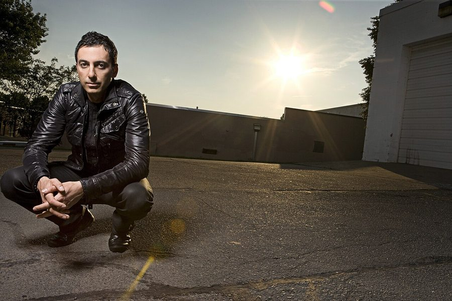

Dubfire [Audio]: Seduced by the power of the dark side



STREAMING AUDIO INTERVIEW
Is Dubfire really the new ‘prince of darkness’, as he was recently crowned by DJ Mag? One thing is for sure – since splitting off from the massively successful Deep Dish that he helmed with longtime musical partner Sharam, he’s found the lure of the ‘dark side’ of European minimal and techno impossible to resist. “I definitely have tapped into a new part of myself,” he told ITM. “I didn’t have this masterplan that I would become this hot techno producer, but I just followed my instincts and kind of went back to my roots… I think the quality of the productions and remixes that I’ve been doing over the past two years speaks for itself.”
And these forays into the darker side of electronic music have been rather well received, you could say. Throwing down massive anthems like Roadkill and Ribcage as well as releasing music on a variety of labels that’s included the imprints of Richie Hawtins and Loco Dice, Dubfire has ruled the roost over the past 12 months. It’s an understatement to say that in his own right and outside of Deep Dish, he’s developed into one of the hottest properties in dance music at the moment.
Dubfire chats to ITM’s Angus Paterson where he discusses his musical journey over the past year, the future of Deep Dish, how he feels about being crowned the ‘Prince of Darkness’ as well as what’s in store for the We Love Sounds tour.
ITM will be hosting Dubfire at the next in the ‘inthemix with…’ series of parties on Friday June 6th, when he’ll be taking over one of Sydney’s best club spaces Arq to perform alongside Stephan Bodzin. Tickets on sale now!
Catch Dubfire performing at the following shows…
Fri Jun 6 – inthemix with… Dubfire & Stephan Bodzin, Sydney
Sat 7 Jun – We Love Sounds, Melbourne
Sat 7 Jun – We Love Sounds, Brisbane
Sun 8 Jun – We Love Sounds, Sydney
Mon 9 June – Adelaide, We Love Sounds